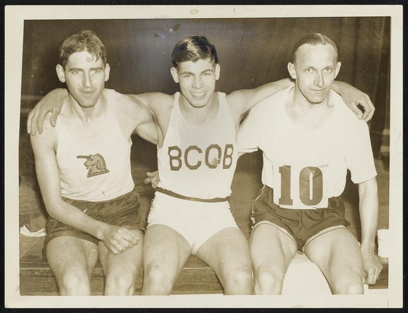
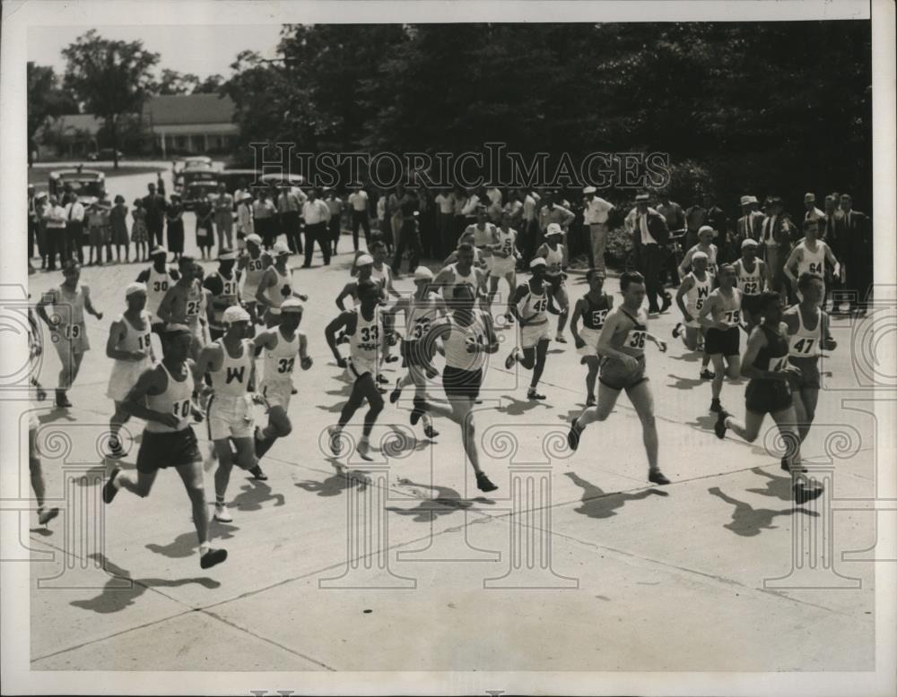
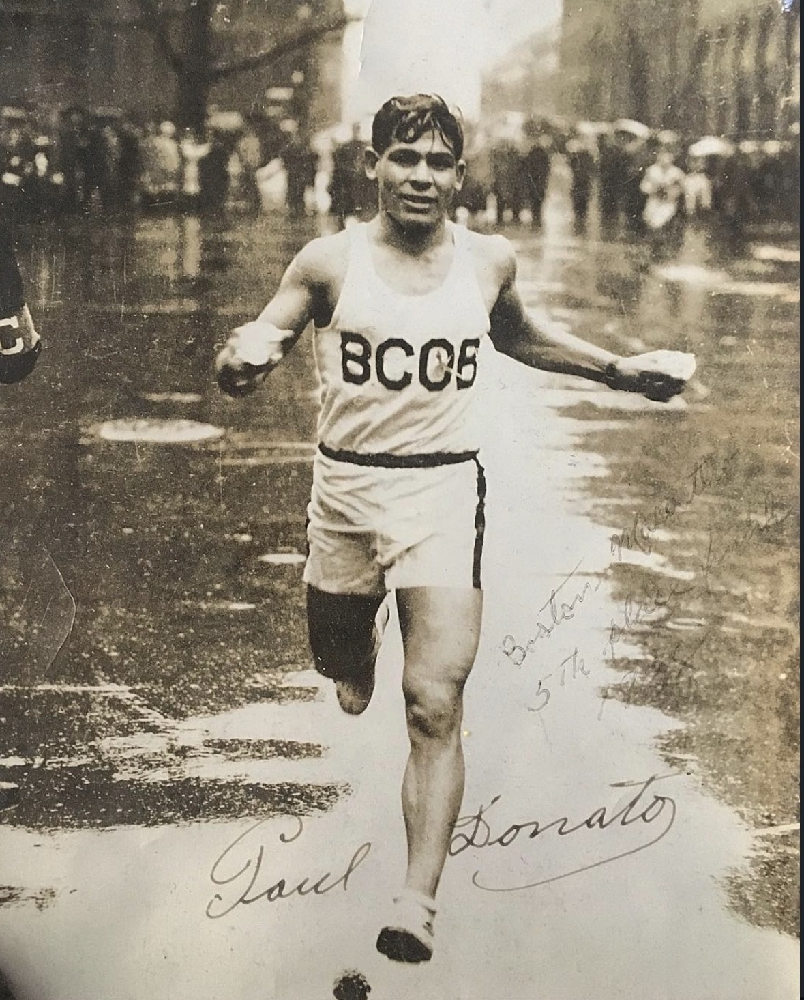
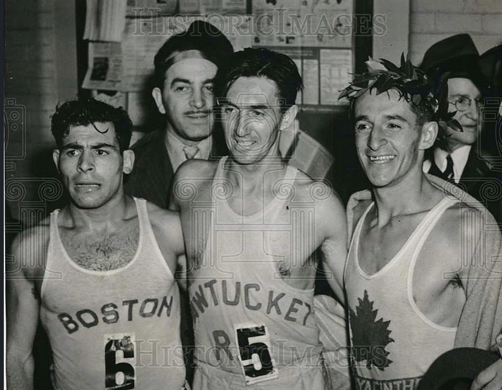
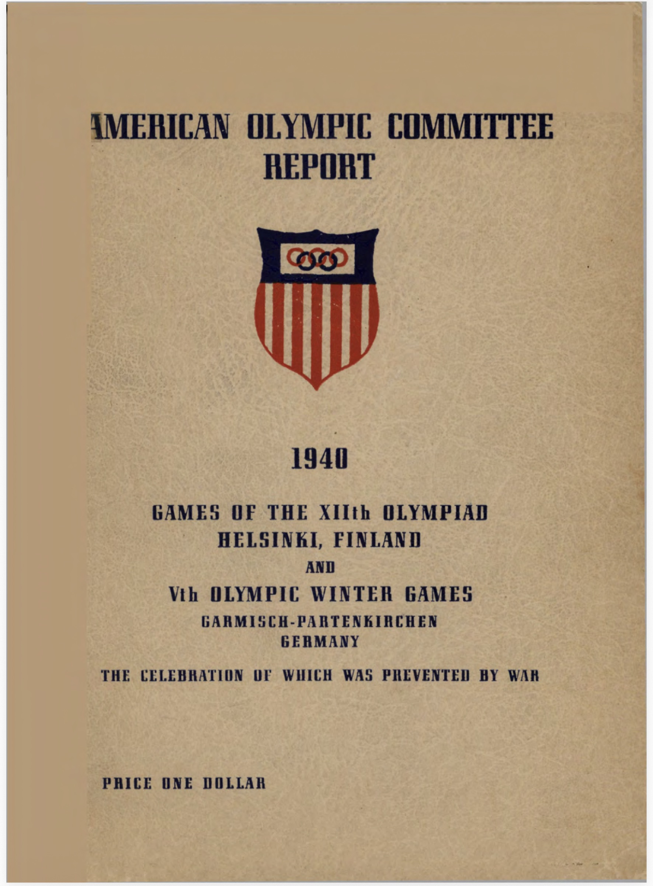
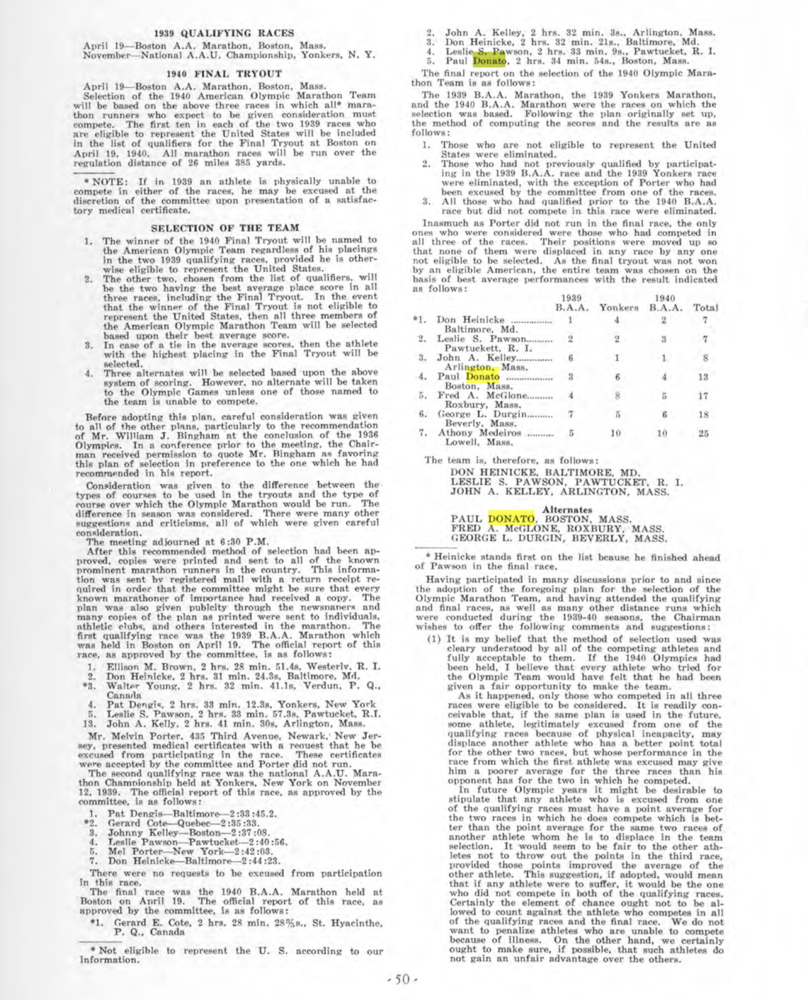
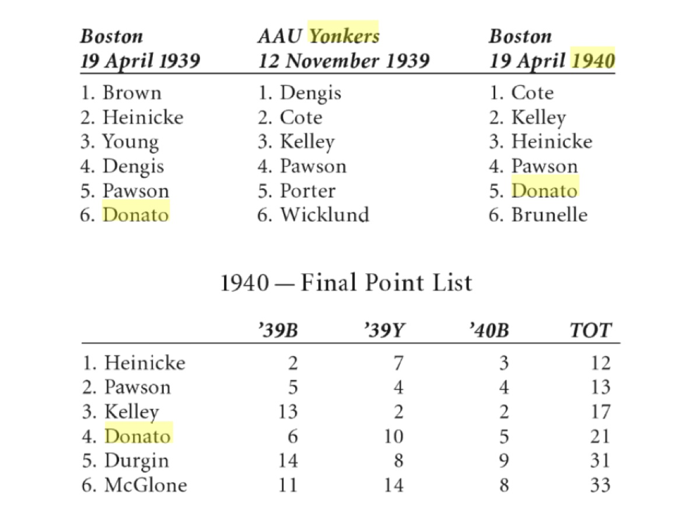

An archive of primary sources · Compiled by his family
Paul A.Donato
He came from Italy at about sixteen, ran for the Boys Club of Boston out of
Roxbury, won a mountain, and missed an Olympic team that never took place.
This page gathers what survives of him, and cites where every piece of it came from.
BornItaly, circa 1915
Ran forBoys Club of Boston
Best knownMount Washington, 1937
Record documented to1970
Plate 1 · Boston Marathon, 19 April 1940 · Family collection
Finishing fifth at Boston in 2:34:54, the fastest marathon he ever ran, in the
race that doubled as the final tryout for the 1940 Olympic team.S6
The print carried no caption. It is placed at 1940 by the singlet lettered
BOSTON and the number 6, which match him exactly in a press photograph
taken after that race alongside the winner Gérard Côté and the fourth place
finisher Les Pawson.S13 See Plate 12.
Preface
What this is, what it is not, and how to read the citations.
Paul A. Donato was one of the better American road runners of the late
1930s, and almost nothing about him is written down in one place. He
finished in the top ten at Boston four times, won the Mount Washington Road
Race in 1937, and was named the first alternate to the 1940 United States
Olympic marathon team.S1S6
Then the Games were cancelled, the war came, and he spent forty three years
as an electrician at the General Electric Riverworks plant in Lynn.S1
Later in life he sold some of his trophies to pay bills. A Boston Marathon
medal from the 1940s was stolen. Very little of the physical record is
accounted for.
Every factual sentence here carries a bracketed marker linking to the
source register at the foot of the page. Where two
sources disagree, both are given and the conflict is named rather than
smoothed over. Where a claim rests on family memory or on inference from a
photograph, it says so. The record is carried to 1970 and stops there.
A note on the name
Three different men share close variants of this name and are routinely
confused in indexes and databases. This archive concerns
Paul A. Donato, the runner, and no one else.
He is not his son, Paul G. Donato of Lynnfield. He is not
Paul J. Donato, the longtime state representative from Medford.
The 2004 Boston Globe obituary of the runner carries the headline
“Paul G. Donato” while naming Paul A. Donato in the text, and
any database that indexed the headline instead of the article inherits
that error.S1
The Record
Every documented appearance, in order. The numeral in the margin is his
finishing place. Read down the column and you have the shape of the career.
Before
—
Circa 1915 to 1932 · Italy, then Boston
Origins
Birthplace not yet established
He was born in Italy in about 1915 or 1916. The 1918 influenza epidemic
killed his mother, two of his brothers and his sister.S1
In August 1937 the Manchester Union described him as an Italian
instrument maker who had lived in the United States for five years,
which places his arrival at about 1932.S2
By then the family was in Roxbury, and he ran, boxed and wrestled under
the colours of the Boys Club of Boston.S9
1936
—
Circa April 1936 · Boston
The Cathedral Run
Earliest known photograph
The earliest image of him yet located. He is in the centre, about twenty
years old, in the singlet lettered BCOB for the Boys Club of
Boston, with his arms over the shoulders of Francis Ryder and Johnny
Simkonis.S11

Plate 2 · Circa April 1936Cathedral run. L to R. Francis Ryder, Paul Donato, Johnny Simkonis.
Collection Boston Herald-Traveler Photo Morgue, Boston Public Library Arts Department Identifier 22_10_000537_0002 · Barcode 39999088103690 Object Photographic print, 166 × 218 mm Rights CC BY-NC-ND 4.0. Master TIF free to download. SourceDigital Commonwealth →
1937
?
Saturday 12 June 1937 · Mount Vernon to Washington
National A.A.U. Marathon Championship
The Washington Star Marathon · Mel Porter won in 2:44:42
The national championship was run from Mount Vernon to the White House
over the full 26 miles 385 yards. Mel Porter of the Millrose A.A. took the
lead near the sixteen mile post, was passed by Pat Dengis, then overhauled
him again crossing Arlington Memorial Bridge and won by almost half a mile.
Clarence DeMar, then forty nine, was fourth.S8
The family holds the framed panoramic photograph of the assembled field.
Where Donato finished is not yet known. He is not among the placings
named in the New York Times report, which covers the first eleven.S8Placing sought
Plate 3 · The assembled fieldWashington Star Marathon for the National A.A.U. Championship
Object Framed panoramic photograph, photographer’s signature lower right Held Family collectionS14 Note No year is visible in the caption. Attribution to 1937 rests on the
family holding it alongside the 1937 press coverage. A numbered singlet in this
photograph may identify him; the frame has not yet been examined at high
resolution.

Plate 4 · The start
Object Press photograph Source Historic ImagesS13 Note Same event as Plate 3. Donato has not been identified in the frame.
Plate 5 · The reportA.A.U. Marathon Won by Porter. Millrose A.A. Runner Beats Dengis in
National Title Event at Washington.
Publication The New York Times, Sunday 13 June 1937, sports pages Held Family collection, digital copyS8
1stMount Washington
Saturday 14 August 1937 · Mount Washington, New Hampshire
He Wins the Mountain
1:16:24 · 44 starters · 27 finishers · Age 21
The second running of the race up the Mount Washington carriage road, then
still dirt. Eight miles at a twenty two degree average incline, from the
Glen House on the Pinkham Notch road to the summit, an ascent of about
4,800 feet.S5 The modern race measures 7.6
miles.S1 Forty four men started.S4
Francis Darrah of Manchester, the defending champion and record holder, led
at the five mile mark. Above the halfway house Darrah’s stomach gave
out and he walked the last mile. Donato went by and won in 1:16:24, in
front of more than four hundred spectators who had come up on a special cog
railway train.S2S3
He is a swell runner and a fine sport, I’m sorry his stomach slowed him up.
At the summit Darrah himself handed over the cup, with Governor Francis P.
Murphy of New Hampshire and his daughter Eleanor looking on.S4
A second photograph of the presentation, published by the Boston Globe the
following summer, shows Donato with the governor and with Dr. George S.
Foster of Manchester, the man in whose honour the race was
founded.S5 Paramount and Pathé newsreel
cameras filmed the ceremony.S12
Plate 6 · The winner, 1937
Running in the Boys Club singlet, number 2. The Boston Globe published this
photograph the next summer captioned simply
PAUL DONATO, Winner of 1937 Race.S5
Object Photographic print, framed, with an inscription in the sky at upper right
that has not been transcribed Held Family collectionS14
Plate 7 · Front page · 16 August 1937Paul Donato of Boston, winner of the gruelling eight-mile road race up Mt.
Washington Saturday, shown at the five-mile mark, about a mile beyond the half
way house. At that time Francis Darrah, of Manchester, was in the lead. See
story and more pictures on page 7.
Publication The Manchester Union, Manchester, New Hampshire Issue Volume 75, Number 119 · Monday morning, 16 August 1937 · Page 1 Headline “Winner Plodding Up Mt. Washington” Held Family collection, digital copyS3
Plate 8 · Page 7 · 16 August 1937Scenes snapped on Mt. Washington Saturday at the eight mile race up the
mountain, which was won by Paul Donato of Boston. At left, Gov. Francis P.
Murphy shown with three of the starters, Paul Martin of Medford, Mass., left,
William Kimball of Franklin and George Dodge of Cambridge, Mass. Center photo
was taken just after the start of the race, shows the 44 contestants getting
under way. At right, Francis Darrah, of Manchester, the record holder, turns
over the cup to the winner as Governor Murphy, extreme right, and his daughter,
Eleanor, look on.
Publication The Union, Manchester, New Hampshire Issue Monday, 16 August 1937 · Page 7 Headline “Paul Donato, Roxbury, Mass., Runner, Leads Field of 30 Up Mt. Washington” Note The right hand photograph is one of only two known images of the 1937
trophy: a large two handled loving cup. Held Family collection, digital copyS4
Plate 9 · Boston Globe feature · 7 August 1938PRESENTATION OF TROPHY IN 1937 RACE. Left to Right: Dr. George S. Foster,
Paul Donato and Gov. Francis P. Murphy.
Publication Daily Boston Globe, Sunday 7 August 1938, page C7 Headline “380 Tons of Energy Required to Run to Top of Mt. Washington.
Each Person Who Completes Strange Sporting Event Aug. 13 Will Have Burned Up
760,320 Foot Pounds of Work” Note Published as a preview of the 1938 race, but both of its Donato
photographs are from 1937. Also the source for the course description and for
Dr. Foster being the second man on record to run up the mountain. Held Family collection, digital copyS5
Railroad car comes up Mount Washington, people at peak greet winner of race /
MS men around table of trophies, winner Paul Donato accepts trophy from Governor
Frank Murphy’s daughter, Donato shakes her hand / MS PAN of people around
Donato who holds his trophy.View at Getty →
Same shoot
Getty 599719446 · 60 seconds · Almost certainly in frame
Title card “Run Race Up Highest Peak in Northeast”. Runners climbing,
a car following the field, athletes passing the camera. He won this race.
View at Getty →
Same shoot
Getty 1291629514 · 31 seconds · Almost certainly in frame
Runners racing down a road past parked cars, tilt up to Mount Washington behind.
View at Getty →
Correction to the catalogue record
Two errors in Getty’s metadata
All three clips are dated 1 August 1937 and placed at North Conway. The
race was run on Saturday 14 August 1937 on the Mount Washington carriage
road.S3S4
Getty also names the presenter as the daughter of “Governor Frank
Murphy”. Frank Murphy was the governor of Michigan. The governor present
was Francis P. Murphy of New Hampshire, and the daughter was
Eleanor Murphy.S4
1938
5thBoston
Tuesday 19 April 1938 · Hopkinton to Boston
Boston Athletic Association Marathon
Fifth · Les Pawson won in 2:35:34
His first top ten finish at Boston, and one of his two best.S1S9
His time has not yet been recovered.
Time sought

Plate 10 · Signed by him
Finishing in the rain in the Boys Club of Boston singlet. Inscribed in his own
hand across the print: Boston Marathon, 5th place finish, and signed
Paul Donato.
Object Photographic print, inscribed and signed Held Family collectionS14 Dating Placed at 1938 rather than 1940, his other fifth place, because he
wears the Boys Club singlet here and the BOSTON singlet in the
photographs known to be from 1940 (Plates 1 and 12). This is inference from the
photographs, not a documented date.
2ndPikes Peak
Monday 4 July 1938 · Colorado
Pikes Peak
Second, about six minutes behind Francis Darrah
Contemporary accounts describe the event as a vertical mile race up Pikes
Peak.S9 Darrah, the man he had beaten on Mount
Washington the previous summer, won, and Donato came in roughly six minutes
later.S2 A Boston runner travelling to Colorado
to race in 1938 was an unusual undertaking.
Times, full results and photographs sought
4thOld Orchard Beach
Wednesday 10 August 1938 · Old Orchard Beach, Maine
Old Orchard Beach Ten Miles
Fourth · Outkicked in the last 25 yards
He held a lead of about ten yards with 200 yards to run and Les Pawson
took him twenty five yards from the line.S10
The field included Clarence DeMar, Pawson and Hawk Zamparelli.
Plate 11 · The start · 10 August 1938
Top competitors before the start. The published caption places
Paul Donato off Clarence DeMar’s left shoulder.S10
Courtesy Old Orchard Beach Historical Society Published byMaine Running Photos → Note Which figure is Donato has not been independently confirmed.
2ndMount Washington
Saturday 13 August 1938 · Mount Washington, New Hampshire
Mount Washington, Defending
1:19:10 · Darrah won in 1:15:27
Three days after Old Orchard Beach he went back to the mountain and lost it
to Darrah, who took the title back and lowered the mark.S2
This was the third running of the race. It would not be held again until
1961.
1939
6thBoston
Wednesday 19 April 1939 · Hopkinton to Boston
Boston, and the First Olympic Qualifier
Sixth · Ellison “Tarzan” Brown won in 2:28:51.4
Sixth place, behind Brown, Heinicke, Young, Dengis and
Pawson.S7S2
This race was also the first of the three counting toward selection of the
1940 United States Olympic marathon team.S6Time sought
10thYonkers national
Sunday 12 November 1939 · Yonkers, New York
National A.A.U. Marathon Championship
Second Olympic qualifying race · Pat Dengis won in 2:33:45.2
Tenth, which was enough: the American Olympic Committee counted only the
first ten finishers of each qualifying race toward
selection.S7S6
It was his weakest of the three, and it still left him inside the cut.
Time sought
1940
5thBoston 2:34:54
Friday 19 April 1940 · Hopkinton to Boston
The Final Tryout
2:34:54 · His fastest recorded marathon
The 1940 Boston Marathon doubled as the final Olympic tryout. The official
result recorded by the American Olympic Committee reads:S6
1. Gerard E. Cote, 2 hrs. 28 min. 28⅗s., St. Hyacinthe, P.Q., Canada ·
2. John A. Kelley, 2 hrs. 32 min. 3s., Arlington, Mass. ·
3. Don Heinicke, 2 hrs. 32 min. 21s., Baltimore, Md. ·
4. Leslie S. Pawson, 2 hrs. 33 min. 9s., Pawtucket, R.I. ·
5. Paul Donato, 2 hrs. 34 min. 54s., Boston, Mass.
American Olympic Committee Report, 1940, page 50S6
Côté, the winner, was Canadian and therefore not eligible for the American
team, so the whole team had to be chosen on average placings across the
three races.S6

Plate 12 · After the finish · 19 April 1940
Left to right: Paul Donato, fifth, in the BOSTON singlet, number 6;
Les Pawson of Pawtucket, fourth, number 5; and the winner
Gérard Côté of St. Hyacinthe, Quebec, in the laurel wreath. This
photograph is what dates Plate 1.
Object Press photograph Source Historic ImagesS13 Identification The three men are the first, fourth and fifth finishers
recorded in the official 1940 result.S6 Côté also won
Boston in 1943, 1944 and 1948, but Donato was in the Army for the first two and
the grouping matches 1940 exactly.
AltFirst alternate
1940 · Games of the XIIth Olympiad, Helsinki
Named to the Olympic Team as First Alternate
The Games were never held
Scored across the 1939 Boston Marathon, the 1939 Yonkers championship and
the 1940 Boston Marathon, Donato placed sixth, tenth and fifth for a total
of 21 points. That put him fourth overall, eight points behind Pawson and
four behind Kelley, and one place outside the
team.S7 He was named the first of the three
alternates.S6
The team is, therefore, as follows: Don Heinicke, Baltimore, Md.
· Leslie S. Pawson, Pawtucket, R.I. ·
John A. Kelley, Arlington, Mass.
Alternates: Paul Donato, Boston, Mass. ·
Fred A. McGlone, Roxbury, Mass. ·
George L. Durgin, Beverly, Mass.
American Olympic Committee Report, 1940, page 50S6
The committee also noted that no alternate would travel unless one of the
named three could not compete.S6 The report
carries the line the celebration of which was prevented by war on its
cover. Helsinki did not host the Games until 1952.

Plate 13 · Cover
Title American Olympic Committee Report, 1940 Covers Games of the XIIth Olympiad, Helsinki, Finland, and Vth Olympic
Winter Games, Garmisch-Partenkirchen, Germany Cover line “The celebration of which was prevented by war” Price One dollar

Plate 14 · Page 50
The primary document. Donato appears three times: fifth in the 1940 final
tryout, fourth in the selection scoring table, and first among the named
alternates.
Publication American Olympic Committee Report, 1940, page 50 Held Family collection, digital copyS6 Note The scoring table on this page shows adjusted positions among the
seven candidates under consideration, not raw finishing places. For the raw
places see Plate 15.

Plate 15 · The selection arithmetic
Raw finishing places across the three qualifying races, and the final point
list. Donato: sixth at Boston in 1939, tenth at Yonkers, fifth at Boston in
1940. Total 21. Fourth overall.
Object Page from an unidentified printed history Held Family collection, digital copyS7 NotePublication and page sought
This table is the only source located so far for his Yonkers placing.
1941
9thBoston 2:49:02
Saturday 19 April 1941 · Hopkinton to Boston
Boston, the Fourth Top Ten
2:49:02 · Running for General Electric Employees
His fourth and last top ten finish at Boston. By this race his club
affiliation had changed from the Boys Club of Boston to General Electric
Employees, the works team at the Lynn Riverworks plant where he had gone to
work as an electrician.S9S1
1942
—
1942 to 1945 · France, Italy, Germany
The War Years
United States Army, electrician
He served as an Army electrician from 1942 to 1945, in France, Italy and
Germany.S1 He was twenty six when he went and
thirty when he came back, and those were the years that would have been the
back half of his competitive prime.
Unit and service record sought
1946
—
1946 to 1955 · New England
After the War
The largest gap in the record
He kept racing. The Boston Globe records that he was competitive in dozens
of races and that his last was the 1955 Boston Marathon, twenty years after
he first ran it.S1
Beyond that, almost nothing about the decade from 1946 to 1955 has been
recovered: no placings, no times, no photographs. This is the single
largest hole in the archive.
Results 1946 to 1955 sought
Undated
?
Year and race unknown
Three Men on a Hill Road
His name is on his chest
Donato runs at the right in a singlet lettered DONATO OF BOSTON. The
runner in the centre wears a sash reading MEDFORD, almost certainly the
North Medford Club. The terrain is open scrub and grass on a climbing dirt
road, with a bare ridge behind.
Singlets printed with a runner’s own name point to a promoted event
where the field was labelled for spectators and press, which makes the
4 July 1938 Pikes Peak race the leading candidate. That is a reading of the
photograph and nothing more.
Race and year sought
Plate 16 · Unidentified
Object Photographic print Held Family collectionS14 Legible “DONATO OF BOSTON” on the right hand runner;
“MEDFORD” on the centre runner’s sash
After
—
Beyond 1970
Closing Note
Where this archive stops
This record is carried to 1970 by design. He lived in Lynnfield, then
Medford, then Clearwater, Florida, and died on 8 May 2004 at eighty eight,
of congestive heart failure, at Mease Continuing Care in Dunedin.S1
He was survived by his wife Marie E. Michalak, his son Paul G. Donato of
Lynnfield, and two grandchildren.S1
The historian Tom Derderian, writing about the Boston Marathon field of
those years, said Donato
might easily pass as the strong man in the circus.S1
Still Missing
An open want list. If you hold, have seen, or can point to any of the
following, it belongs here.
Objects
The 1937 Mount Washington cup
A large two handled loving cup, visible in Plates 8 and 9 and in the
newsreel footage. He later sold trophies to pay bills. Its whereabouts are
unknown.
Objects
Boston Athletic Association place medals, 1938 to 1941
One Boston Marathon medal from the 1940s was stolen. Others may have been
sold. Any B.A.A. place medal of this period with a traceable history is of
interest.
Objects
1940 Olympic team material
Certificates, badges, pins or correspondence relating to the alternates
named in the American Olympic Committee Report.
Records
His placing in the 1937 national championship
He is not among the first eleven named in the New York Times report of the
Washington Star Marathon. The full finishing list would settle it.
Records
Results, 1946 to 1955
Any placing or time from his post war racing, and confirmation of his 1955
Boston Marathon finish.
Records
Arrival and origin
The passenger manifest for his arrival around 1932, his town of birth in
Italy, naturalisation papers, and the 1940 census entry for the Roxbury
household.
Records
The printed source of Plate 15
The typeset table of Olympic qualifying places. Identifying the book and
page would give the Yonkers placing a citable source.
Images
Identification of Plate 16
Three runners on a hill road, Donato in a singlet reading DONATO OF BOSTON.
Race and year unknown.
Images
Pikes Peak, 4 July 1938
No photograph confirmed to be from his Colorado race has been found. The
Colorado Springs Gazette photo morgue and the Pikes Peak Library District
are the likely holders.
Images
The inscription on Plate 6
There is handwriting in the sky at upper right of the 1937 Mount Washington
print. It has not been transcribed and may carry a date or a dedication.
Source Register
Every marker in the text points here. Family held documents are named as such
so their status is never in doubt.
Paul G. Donato, at 88; ran with Boston Marathon elite, The Boston
Globe, 20 May 2004.
Read →
Obituary of the runner. The headline gives the son’s name in error;
the article text names Paul A. Donato. Source for birth and death, family,
the 1918 influenza losses, military service, the General Electric years,
the four top ten Boston finishes, the 1955 last race, and the Derderian
quotation.
Dave Dunham, Only One Hill! A History of the Mt. Washington Road Race
(2006), Chapter 1, serialised by the American Trail Running Association.
Read →
Source for the 1937 winning time of 1:16:24, the 27 finishers, the cog
railway spectators, the Union Leader descriptions, Donato’s quotation
about Darrah, the 1938 Mount Washington result, and the Pikes Peak margin.
The Manchester Union, Manchester, New Hampshire. Volume 75,
Number 119. Monday morning, 16 August 1937, page 1. Photograph headlined
“Winner Plodding Up Mt. Washington”.
Family collection, digital copy. Reproduced as Plate 7. Not yet located in
any public digital newspaper archive.
The Union, Manchester, New Hampshire. Monday, 16 August 1937,
page 7. “Paul Donato, Roxbury, Mass., Runner, Leads Field of 30 Up Mt.
Washington”.
Family collection, digital copy. Reproduced as Plate 8. Source for the 44
starters, the eight mile description, the identity of Governor Francis P.
Murphy and his daughter Eleanor, and Darrah handing over the cup.
“380 Tons of Energy Required to Run to Top of Mt. Washington”,
Daily Boston Globe, Sunday 7 August 1938, page C7.
Family collection, digital copy, retrieved from a historical newspaper
database. Reproduced as Plate 9. Source for the course description, for
Dr. George S. Foster of Manchester, and for the two 1937 photographs,
including the trophy presentation and the caption
“PAUL DONATO, Winner of 1937 Race”.
American Olympic Committee Report, 1940. Games of the XIIth
Olympiad, Helsinki, Finland, and Vth Olympic Winter Games,
Garmisch-Partenkirchen, Germany. Page 50.
Family collection, digital copy. Reproduced as Plates 13 and 14. The primary
document for the 1940 final tryout result, the selection method, the named
team, and Donato as first alternate.
Table of 1940 Olympic marathon qualifying places and final point list, from an
unidentified printed history.
Family collection, digital copy. Reproduced as Plate 15. The only located
source for his tenth place at Yonkers and for the raw, unadjusted placings.
Publication sought
“A.A.U. Marathon Won by Porter”, The New York Times,
Sunday 13 June 1937, sports pages.
Family collection, digital copy. Reproduced as Plate 5. Source for the
course, the winning time, and the first eleven finishers of the 1937
national championship.
Throwback Thursday: Waaaaay Back to the 1938 Old Orchard Beach (ME) 10M,
New England Runner, 6 August 2020.
Read →
Source for the Old Orchard Beach finish, the Pikes Peak second place, the
Boston placings across 1938 to 1941, the Boys Club of Boston affiliation
including boxing and wrestling, and the General Electric Employees
affiliation.
Wednesday, August 10, 1938 Old Orchard Beach 10 Mile Marathon,
Maine Running Photos.
Read →
Photograph courtesy of the Old Orchard Beach Historical Society. Caption
places Donato off Clarence DeMar’s left shoulder. Reproduced as Plate 11.
Cathedral run. L to R. Francis Ryder, Paul Donato, Johnny Simkonis.
Circa April 1936. Boston Herald-Traveler Photo Morgue, Boston Public Library
Arts Department.
View →
Identifier 22_10_000537_0002. Barcode 39999088103690. Licensed CC BY-NC-ND
4.0. Reproduced as Plate 2.
Paramount and Pathé newsreel footage, Sherman Grinberg Library, via Getty
Images. Clips
599719892,
599719446 and
1291629514.
Getty dates all three to 1 August 1937 at North Conway. Both the date and
the location appear to be catalogue approximations, and Getty’s naming
of “Governor Frank Murphy” is an error corrected here from S4.
Getty keyword search does not return these clips for the name
“Paul Donato”; search the event instead.
Press photographs, Historic Images. Two frames: the start of the 1937 national
championship at Washington, and the first, fourth and fifth finishers of the
1940 Boston Marathon.
Reproduced as Plates 4 and 12. Both carry the Historic Images watermark.
Original negatives and full captions have not been obtained.
Uncaptioned photographs, family collection.
Plates 1, 3, 6, 10 and 16. Provenance within the family only. Plate 10 is
inscribed and signed by Donato himself; the rest carry no caption,
photographer or date, and any attribution given here is stated as inference.